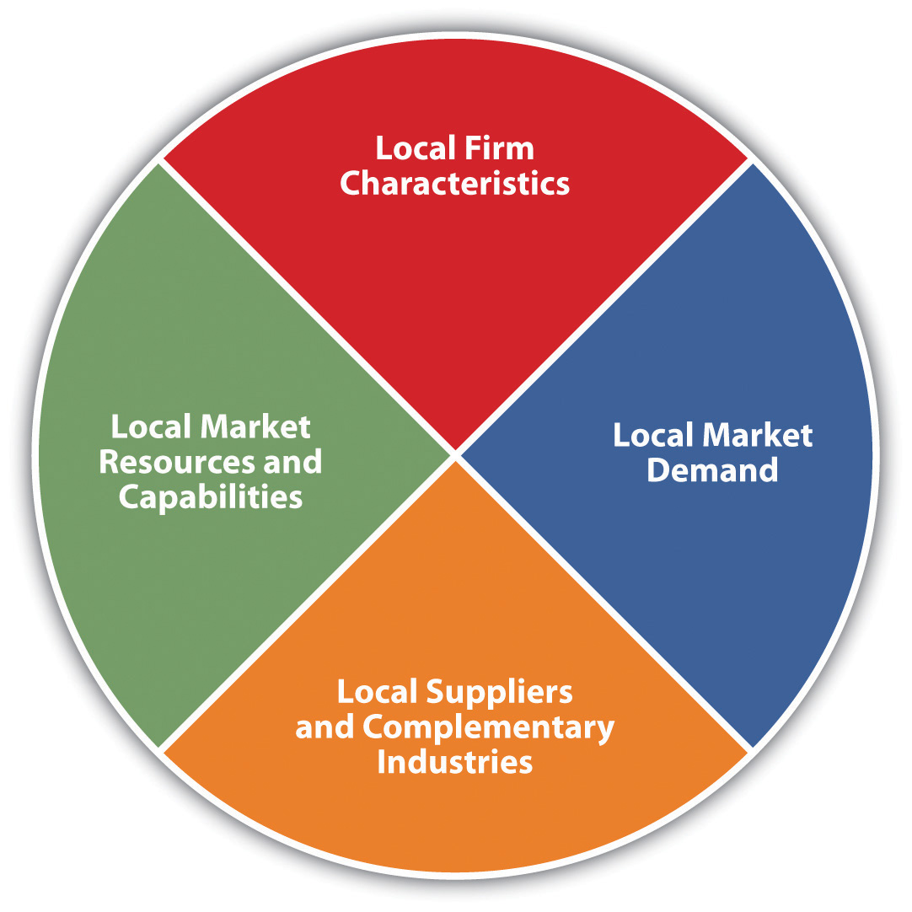

This chapter introduces you to the R&D function and innovation in international business. First, you’ll look at R&D and its importance to corporations (Section 13.1 "An Introduction to Research and Development (R&D)") and then move on to consider intellectual property rights around the world (Section 13.2 "Intellectual Property Rights around the Globe"). Section 13.3 "How to Organize and Where to Locate Research and Development Activities" examines how to organize the international R&D function and where to locate R&D activities. Communications and other technologies are flattening the world in regard to innovation, enabling innovation activities to be located anywhere, while the absence of legal property-rights protections in some areas work against this flattener. Section 13.4 "Increasing Speed and Effectiveness of International Innovation" discusses the activities associated with managing innovation and running international R&D to increase the speed and effectivness with which a firm can innovate. You’ll learn how the developments enabled by the Internet, such as open innovation, are bringing new innovation opportunities while at the same time making innovation imperative. Section 13.5 "Innovation for the Bottom of the Pyramid" describes innovating for the needs of all the world’s consumers, not just the wealthiest ones. Innovation in emerging markets is also depicted in the opening case study on Unilever.
For most companies, the traditional route to global business is through the export of the products they have developed and manufactured for their home markets. But most of the products sold in developed countries are much too expensive for emerging markets, where most of the people make less than $1,500 per year.“Sachet Marketing,” Trend Watching, accessed May 16, 2010, http://trendwatching.com/trends/sachet_marketing.htm. Simply exporting products designed for the United States, Western Europe, or Japan doesn’t work well. Nor does simply lowering the price of products, because lower prices mean both lower margins and increased risks of cannibalizing the profits of higher-priced brands.
Moreover, emerging markets, such as Brazil, Russia, India, and China (also collectively known as the BRIC countries), don’t have the same needs or capabilities as those found in developed economies. For instance, disposable income levels are relatively low, the availability of basic utilities like water or electricity can be varied, and transportation and transportation infrastructure can be nonexistent. While these emerging economies are attractive by virtue of their massive size, their different needs and capabilities pose unique challenges that are often overcome only through corporate innovation. Let’s look at a case in point—Unilever in Brazil.
Unilever in Brazil
Source: “Omo,” Unilever, accessed June 3, 2011, http://www.unilever.com/brands/homecarebrands/omo/index.aspx.
Among consumer packaged-goods (CPG) companies, Unilever and Procter & Gamble (P&G) often trade punches for customers in the world’s emerging markets. Take their efforts in trying to market powdered laundry detergent (sometimes referred to as “washing powders”) to the tens of millions of poorer consumers in Brazil. A decade ago, Unilever and P&G held significantly different market shares than they do today. Unilever held an 81 percent market share in the powered detergent sector while P&G was a late entrant in the market and was a distant second behind Unilever. P&G, however, was known for its strong R&D unit and extensive marketing experience worldwide; thus it posed a potential threat to Unilever.Pierre Chandon, “Unilever in Brazil: Marketing Strategies for Low-Income Countries,” November 28, 2006, accessed December 19, 2010, http://estrategiasynegocios.wordpress.com/2006/11/28/case-study-unilever-in-brazil-marketing-strategies-for-low-income-countries.
Laercio Cardoso, head of Unilever’s Home Care division in Brazil, knew he had to take action to respond to P&G’s imminent threat. The solution, as he saw it, was to develop a product targeting the lower end of the market. But Cardoso faced opposition from his own colleagues at Unilever, because they ascribed Unilever’s prior success to its premium-quality products. They also argued that any successful move into the low-end market would have to draw demand from Brazil’s low-income consumers living in its vast favelas (slums). Over the years, both in Brazil and elsewhere, Unilever had learned that the attitudes and behaviors of this segment of consumers were very different from what Unilever was used to in the more high-end markets.
For example, Unilever knew that low-end consumers in Brazil didn’t own washing machines. Instead, mothers washed the family’s clothing by hand in the river. Regardless of whether the family lived in a city or rural area, the river was the place where mothers gathered to wash the clothes. What’s more, the women shopped at local mom-and-pop stores, not big central shopping centers. To succeed in this new market, therefore, Unilever would have to design a soap that was effective for washing clothes by hand and that could be easily transported to the local mom-and-pop shops.
Drawing on its experience in India, Unilever launched Ala, a brand of detergent created specifically to meet the needs of low-income consumers.“Sachet Marketing,” Trend Watching, accessed May 16, 2010, http://trendwatching.com/trends/SACHET_MARKETING.htm. The product is designed to work well for laundry washed by hand in river water. It’s affordable and effective—and it is sold in small sizes to make it easy to transport and stock in a local store. The technique of small-portion packaging is called “sachet marketing,” originating from powered soaps and shampoos sold in sachets in India for two to four cents each.
(AACSB: Ethical Reasoning, Multiculturalism, Reflective Thinking, Analytical Skills)
Research and development (R&D)The intertwined processes of research (to identify new knowledge and ideas) and development (turning the ideas into tangible products or processes). refers to two intertwined processes of research (to identify new knowledge and ideas) and development (turning the ideas into tangible products or processes). Companies undertake R&D in order to develop new products, services, or procedures that will help them grow and expand their operations. Corporate R&D began in the United States with Thomas Edison and the Edison General Electric Company he founded in 1890 (which is today’s GE). Edison is credited with 1,093 patents, but it’s actually his invention of the corporate R&D lab that made all those other inventions possible.Andrea Meyer, “High-Value Innovation: Innovating the Management of Innovation,” Working Knowledge (blog), August 20, 2009, accessed February 22, 2011, http://workingknowledge.com/blog/?p=594. Edison was the first to bring management discipline to R&D, which enabled a much more powerful method of invention by systematically harnessing the talent of many individuals. Edison’s 1,093 patents had less to do with individual genius and more to do with management genius: creating and managing an R&D lab that could efficiently and effectively crank out new inventions. For fifty years following the early twentieth century, GE was awarded more patents than any other firm in America.Gary Hamel, “The Why, What and How of Management Innovation,” Harvard Business Review, February 2006, accessed February 24, 2011, http://hbr.org/2006/02/the-why-what-and-how-of-management-innovation/ar/1.
Edison is known as an inventor, but he was also a great innovator. Here’s the difference: an inventionBrings an idea into tangible reality by embodying it as a product or process. brings an idea into tangible reality by embodying it as a product or system. An innovationGenerates revenue from a product or process. converts a new idea into revenues and profits. Inventors can get patents on original ideas, but those inventions may not make money. For an invention to become an innovation, people must be willing to buy it in high enough numbers that the firm benefits from making it.A. G. Lafley and Ram Charan, The Game-Changer (New York: Crown Publishing Group, 2008), 21.
Edison wanted his lab to be a commercial success. “Anything that won’t sell, I don’t want to invent. Its sale is proof of utility and utility is success,”A. G. Lafley and Ram Charan, The Game-Changer (New York: Crown Publishing Group, 2008), 25. Edison said. Edison’s lab in Menlo Park, New Jersey, was an applied researchThe systematic work to gain knowledge to meet a specific need. lab, which is a lab that develops and commercializes its research findings. As defined by the National Science Foundation, applied research is “systematic study to gain knowledge or understanding necessary to determine the means by which a recognized and specific need may be met.”National Science Foundation, “Definitions of Research and Development,” Office of Management and Budget Circular A-11, accessed March 5, 2011, http://www.nsf.gov/statistics/randdef/fedgov.cfm. In contrast, basic researchThe work of scientists and others who pursue their investigations without commercial goals, focusing on unraveling the secrets of nature and finding new knowledge. advances the knowledge of science without an explicit, anticipated commercial outcome.
From Edison’s lab onward, companies learned that a systematic approach to research could provide big competitive advantages. Companies could not only invent new products, but they could also turn those inventions into innovations that launched whole new industries. For example, the radio, wireless communications, and television industry grew out of early-twentieth-century research by General Electric and American Telephone and Telegraph (AT&T, which founded Bell Labs).
The heyday of American R&D labs came in the 1950s and early 1960s, with corporate institutions like Bell Labs, RCA labs, IBM’s research centers, and government institutions such as NASA and DARPA. These labs funded both basic and applied research, giving birth to the transistor, long-distance TV transmission, photovoltaic solar cells, the UNIX operating system, and cellular telephony, each of which led to the creation of not just hundreds of products but whole industries and millions of jobs.Adrian Slywotzky, “How Science Can Create Millions of New Jobs,” BusinessWeek, September 7, 2009, accessed May 11, 2011, http://www.businessweek.com/magazine/content/09_36/b4145036678131.htm. DARPA’s creation of the Internet (known at its inception as ARPAnet) and Xerox PARC’s Ethernet and graphical-user interface (GUI) laid the foundations for the PC revolution.Adrian Slywotzky, “How Science Can Create Millions of New Jobs,” BusinessWeek, September 7, 2009, accessed May 11, 2011, http://www.businessweek.com/magazine/content/09_36/b4145036678131.htm.
Companies invest in R&D to gain a pipeline of new products. For a high-tech company like Apple, it means coming up with new types of products (e.g., the iPad) as well as newer and better versions of its existing computers and iPhones. For a pharmaceutical company, it means coming out with new drugs to treat diseases. Different parts of the world have different diseases or different forms of known diseases. For example, diabetes in China has a different molecular structure than diabetes elsewhere in the world, and pharmaceutical company Eli Lilly’s new R&D center in Shanghai will focus on this disease variant.“2011 Global R&D Funding Forecast,” R&D Magazine, December 2010, accessed February 27, 2011, http://www.battelle.org/aboutus/rd/2011.pdf. Even companies that sell only services benefit from innovation and developing new services. For example, MasterCard Global Service started providing customers with emergency cash advances, directions to nearby ATMs, and emergency card replacements.Lance Bettencourt, Service Innovation (New York: McGraw-Hill, 2010), 99.
Innovation also includes new product and service combinations. For example, heavy-equipment manufacturer John Deere created a product and service combination by equipping a GPS into one of its tractors. The GPS keeps the tractor on a parallel path, even under hands-free operation, and keeps the tractor with only a two-centimeter overlap of those parallel lines. This innovation helps a farmer increase the yield of the field and complete passes over the field in the tractor more quickly. The innovation also helps reduce fuel, seed, and chemical costs because there is little overlap and waste of the successive parallel passes.Lance Bettencourt, Service Innovation (New York: McGraw-Hill, 2010), 110.
Appliance maker Whirlpool has made innovation a strategic priority in order to stay competitive. Whirlpool has an innovation pipeline that currently numbers close to 1,000 new products. On average, Whirlpool introduces one hundred new products to the market each year. “Every month we report pipeline size measured by estimated sales, and our goal this year is $4 billion,” said Moises Norena, director of global innovation at Whirlpool. With Whirlpool’s 2008 revenue totaling $18.9 billion, that means roughly 20 percent of sales would be from new products.Jessie Scanlon, “How Whirlpool Puts New Ideas through the Wringer,” BusinessWeek, August 3, 2009, accessed January 17, 2011, http://www.businessweek.com/innovate/content/aug2009/id2009083_452757.htm.
Not only do companies benefit from investing in R&D, but the nation’s economy benefits as well, as Massachusetts Institute of Technology (MIT) professor Robert Solow discovered. Solow showed mathematically that, in the long run, growth in gross national product per worker is due more to technological progress than to mere capital investment. Solow won a Nobel Prize for his research, and investment in corporate R&D labs grew.
Although R&D has its roots in national interests, it has become globalized. Most US and European Fortune 1000 companies have R&D centers in Asia.“2011 Global R&D Funding Forecast,” R&D Magazine, December 2010, accessed February 27, 2011, http://www.battelle.org/aboutus/rd/2011.pdf. You’ll see the reasons for the globalization of R&D in Section 13.3 "How to Organize and Where to Locate Research and Development Activities".
Governments have played a large role in the inception of R&D, mainly to fund research for military applications for war efforts. Today, governments still play a big role in innovation because of their ability to fund R&D. A government can fund R&D directly, by offering grants to universities and research centers or by offering contracts to corporations for performing research in a specific area.
Governments can also provide tax incentives for companies that invest in R&D. Countries vary in the tax incentives that they give to corporations that invest in R&D. By giving corporations a tax credit when they invest in R&D, governments encourage corporations to invest in R&D in their countries. For example, Australia gave a 125 percent tax deduction for R&D expenses. The Australian government’s website noted, “It’s little surprise then, that many companies from around the world are choosing to locate their R&D facilities in Australia.” The government also pointed out that “50 percent of the most innovative companies in Australia are foreign-based.”Committee on Prospering in the Global Economy of the 21st Century (U.S.), Committee on Science, Engineering, and Public Policy (U.S.), Rising Above the Gathering Storm (Washington, DC: National Academies Press, 2007), 195.
Finally, governments can promote innovation through investments in infrastructure that will support new technology and by committing to buy the new technology. China is doing this in a big way, and it is thus influencing the course of many companies around the world. Since 2000, China has had a policy in place “to encourage tech transfer from abroad and to force foreign companies to transfer their R&D operations to China in exchange for access to China’s large volume markets,” reported R&D Magazine in its 2010 review of global R&D.“2011 Global R&D Funding Forecast,” R&D Magazine, December 2010, accessed February 27, 2011, http://www.battelle.org/aboutus/rd/2011.pdf. For example, any automobile manufacturer that wants to sell cars in China must enter into a partnership with a Chinese company. As a result, General Motors (GM), Daimler, Hyundai, Volkswagen (VW), and Toyota have all formed joint ventures with Chinese companies. General Motors and Volkswagen, for example, have both formed joint ventures with the Chinese company Shanghai Automotive Industry Corporation (SAIC), even though SAIC also sells cars under its own brand.Brian Dumaine, “China Charges into Electric Cars,” Fortune, November 1, 2010, 140. The Chinese government made another strategic decision influencing innovation in the automobile industry. Because no Chinese company is a leader in internal combustion engines, the government decided to leapfrog the technology and focus on becoming a leader in electric cars.Bill Russo, Tao Ke, Edward Tse, and Bill Peng, China’s Next Revolution: Transforming The Global Auto Industry, Booz & Company report, 2010, accessed February 27, 2011, http://www.booz.com/media/file/China’s_Next_Revolution_en.pdf. “Beijing has pledged that it will do whatever it takes to help the Chinese car industry take the lead in electric vehicles,” notes industry watcher Brian Dumaine. Brian Dumaine, “China Charges into Electric Cars,” Fortune, November 1, 2010, 140. That includes allocating $8 billion in R&D funds as well as another $10 billion in infrastructure (e.g., installing charging stations).Gordon Orr, “Unleashing Innovation in China,” McKinsey Quarterly, January 2011, accessed January 2, 2011, https://www.mckinseyquarterly.com/Strategy/Innovation/Unleashing_innovation_in_China_2725. The government will also subsidize the purchase of electric cars by consumers and has committed to buying electric cars for government fleets, thus guaranteeing that there will be buyers for the new electric vehicles that companies invent and develop.
Another role of government is to set high targets that require innovation. In the 1960s, the US Apollo space program launched by President John F. Kennedy inspired US corporations to work toward putting a man on the moon. The government’s investments in the Apollo program sped up the development of computer and communications technology and also led to innovations in fuel cells, water purification, freeze-drying food, and digital image processing now used in medical products for CAT scans and MRIs.Adrian Slywotzky, “How Science Can Create Millions of New Jobs,” BusinessWeek, September 7, 2009, accessed May 11, 2011, http://www.businessweek.com/magazine/content/09_36/b4145036678131.htm. Today, government policies coming from the European Union mandate ambitious environmental targets, such as carbon-neutral fuels and energy, which are driving global R&D to achieve environmental goals the way the Apollo program drove R&D in the 1960s.Martin Grueber and Tim Studt, “A Battelle Perspective on Investing in International R&D,” R&D Magazine, December 22, 2009, http://www.rdmag.com/Featured-Articles/2009/12/Global-Funding-Forecast-A-Battelle-Perspective-International-R-D.
After the 1990s, US investment in R&D declined, especially in basic research. Governments in other countries, however, continue to invest. New government-corporate partnerships are developing around the world. IBM, which for years closely guarded its R&D labs (even IBM employees were required to have special badges to enter the R&D area), is now setting up “collaboratories” around the world. These collaboratories are partnerships between IBM researchers and outside experts from government, universities, and even other companies. “The world is our lab now,” says John E. Kelly III, director of IBM Research.Steve Hamm, “How Big Blue Is Forging Cutting-edge Partnerships around the World,” BusinessWeek, August 27, 2009, accessed January 2, 2010, http://www.businessweek.com/print/magazine/content/09_36/b4145040683083.htm. IBM has deals for six future collaboratories in China, Ireland, Taiwan, Switzerland, India, and Saudi Arabia.
The reason for the collaboratory strategy is to share R&D costs—IBM’s partners must share 50 percent of the funding costs, which means that together the partners can participate in a large-scale effort that they’d be hard pressed to fund on their own. An example is IBM’s research partnership with the state-funded Swiss university ETH Zurich. The two are building a $70 million semiconductor lab for nanotech research with the goal of identifying a replacement for the current semiconductor-switch technology.Steve Hamm, “How Big Blue Is Forging Cutting-Edge Partnerships around the World,” BusinessWeek, August 27, 2009, accessed January 2, 2010, http://www.businessweek.com/print/magazine/content/09_36/b4145040683083.htm. Such a breakthrough could harken the creation of a whole new industry.
Of all the countries in the world, the United States remains the largest investor in R&D. One-third of all spending on R&D comes from the United States. Just one government agency—the Department of Defense—provides more funding than all the nations of the world except China and Japan. Nonetheless, other countries are increasing the amounts of money they spend on R&D. Their governments are funding R&D at higher levels and are giving more attractive tax incentives to firms that spend on R&D.
Governments can also play a big role in the protection of intellectual property rights, as you’ll see in Section 13.2 "Intellectual Property Rights around the Globe".
(AACSB: Reflective Thinking, Analytical Skills)
For companies to gain financial benefits from investing in research and coming up with new inventions, there must be legal protection for those inventions. The system of law related to R&D and innovation is referred to as intellectual property rights. Different countries vary in the extent to which they protect intellectual property and enforce intellectual property regulations. The presence of strong, enforceable, consistent property rights serves to make the world flatter. However, as long as significant differences in property rights exist around the globe, the world will be far from flat with respect to innovation.
Intellectual property (IP)Creations of the mind, such as inventions, literary and artistic works, and symbols, names, and images used in commerce. refers to creations of the mind—inventions, literary and artistic works, and symbols, names, and images used in commerce.“What Is Intellectual Property?,” World Intellectual Property Organization, 2003, accessed March 4, 2011, http://www.wipo.int/freepublications/en/intproperty/450/wipo_pub_450.pdf. The term property connotes ownership that’s exclusive, but the owners have the right to license or sell their IP. Under intellectual property law, owners are granted certain exclusive rights—intellectual property rights (IPR)The exclusive rights granted to owners for their intangible assets under intellectual property law.—to the discoveries, inventions, words, phrases, symbols, and designs they create.
Let’s look at the ways companies protect their IP and profit from it. The simplest way for a company to protect its intellectual property is to never reveal it—to create what is called a trade secretAny confidential business information which provides an enterprise with a competitive edge.. This is how Coca-Cola protects the formula for its hugely popular soda. If the secret were discovered or revealed through nefarious intent, then trade secret law would allow punishment of the perpetrator, including criminal prosecution. But if a company somehow developed the same formula on its own, Coca-Cola could do nothing to stop them. Therefore, companies opt for other IP protection—namely, patentsExclusive right granted for an invention, whether a product or a process, which must be industrially applicable (useful), be new (novel), and exhibit a sufficient “inventive step” (be nonobvious). and copyrightsThe body of laws that grants authors, artists, and other creators protection for their literary and artistic creations, which are generally referred to as “works.”.
The most common way to protect an industrial discovery or invention is to patent it. A patent is an inventor’s exclusive right granted by the government for an invention, whether a product or a process, that is industrially applicable (i.e., useful) or new (i.e., novel) or exhibits a sufficient “inventive step” (i.e., be nonobvious) To get a patent, the company must reveal the details of the invention. The rationale for revealing the invention details is so that others can build on the invention and thus promote further innovation. By revealing the invention, companies obtain legal protection and the right to exclusive sales of the invention (or the right to license or sell its use to others). The patent gives the patent owner a monopoly on the invention for a specific number of years.
Patents can be granted within a single country or internationally. Christian Hahner, head of Intellectual Property & Technology Management at Daimler, said, “Attaining international patent protection is an expensive undertaking. If we believe it’s important for our business to actively defend our patent in court in order to prevent unauthorized copies or imitations, then we have to nationalize the patent, which makes it valid in other countries.”Peter Thomas, “Patents Are the Future of Innovation Management,” Technicity, 2010, accessed February 10, 2011, http://www.daimler-technicity.de/en/christianhahner. A patent prohibits other people from selling the identical product built in the same way as the accepted patent. Patents give the owner the right to defend the invention in court, but they don’t automatically mean that the owner will win the court case.
“When I make an innovation public in Germany by initially registering a patent, I’m actually defining the state of the art. It then becomes impossible for anyone else in the world to patent that innovation,” Hahner said. “The publication of the patent also creates conditions that enable the worldwide utilization of innovations with great value to society—like those related to vehicle safety, for example.”Peter Thomas, “Patents Are the Future of Innovation Management.” Technicity, 2010, accessed February 10, 2011, http://www.daimler-technicity.de/en/christianhahner. That is, by disclosing the invention publicly, the inventor gets legal protection from outright copying of the invention, but society also benefits because others learn about the invention and can try to devise a different, original way to achieve the same outcome. Because of this fear of copying, some companies, such as Microsoft, choose not to patent some of their products. For example, Microsoft does not have a patent on its Windows software because doing so would force it to reveal its source code, which Microsoft does not want to do.
A car might have one hundred patents associated with it in various parts and components. In contrast, in the pharmaceutical industry, one patent may be all that’s needed to cover one product: a patented drug is the product in itself. What’s more, much of the innovation in new cars today resides in software. For example, the Chevrolet Volt has more software than a state-of-the-art fighter aircraft. Almost 40 percent of the car’s value comes from software, computer controls, and sensors.Jason Paur, “Chevy Volt: King of (Software) Cars,” Wired, November 5, 2010, accessed February 27, 2011, http://www.wired.com/autopia/2010/11/chevy-volt-king-of-software-cars.
A trademarkA distinctive sign, which identifies certain goods or services as those produced or provided by a specific person or enterprise. is a distinctive sign that identifies certain goods or services as those produced or provided by a specific person or enterprise. A trademark uniquely identifies the source of the product. Companies trademark brand names and then advertise to build familiarity with that name.Steve Steinhilber, Strategic Alliances (Cambridge, MA: Harvard Business School Press, 2008), 98. Consumers come to trust the name and look for other products by that maker.
For a brief review of the main types of intellectual property rights, see Table 13.1 "Intellectual Property Types", which is reprinted with permission from Exchanging Value—Negotiating Technology Licensing Agreements—A Training Manual, which was published jointly by the World Intellectual Property Organization (WIPO) and the International Trade Centre (ITC) (http://www.wipo.int/sme/en/documents/pdf/technology_licensing.pdf).
Table 13.1 Intellectual Property Types
| Patents | A patent is an exclusive right granted for an invention, whether a product or a process, which must be industrially applicable (useful), be new (novel) and exhibit a sufficient “inventive step” (be nonobvious). A patent provides protection for the invention to the owner of the patent. The protection is granted for a limited period, generally twenty years from the filing date. |
| Trademarks | A trademark is a distinctive sign, which identifies certain goods or services as those produced or provided by a specific person or enterprise. The system helps consumers identify and purchase a product or service because its nature and quality, indicated by its unique trademark, meets their needs. |
| Trade Secrets | Broadly speaking, any confidential business information which provides an enterprise with a competitive edge can qualify as a trade secret. A trade secret may relate to technical matters, such as the composition or design of a product, a method of manufacture or the know-how necessary to perform a particular operation. Common items that are protected as trade secrets include manufacturing processes, market research results, consumer profiles, lists of suppliers and clients, price lists, financial information, business plans, business strategies, advertising strategies, marketing plans, sales plans and methods, distribution methods, designs, drawings, architectural plans, blueprints and maps, etc. |
| Copyright and Related Rights | Copyright is the body of laws which grants authors, artists and other creators protection for their literary and artistic creations, which are generally referred to as “works.” A closely associated field of rights related to copyright is “related rights”, which provides rights similar or identical to those of copyright, although sometimes more limited and of shorter duration. |
The word license, according to the World Intellectual Property Organization (WIPO), means permission granted by the owner of the intellectual property to another to use it according to agreed terms and conditions, for a defined purpose, in a defined territory, and for an agreed period of time.Geoffrey Loades, “Exchanging Value: Negotiating Technology Licensing Agreements,” World Intellectual Property Organization, 2005, 14. In licensingThe owner of an asset granting the right to use the asset to another while continuing to retain ownership of the asset; an important way of creating value with assets. IP rights, the IP owner gives permission to use the IP but retains ownership of the IP.
Some companies obtain patents mainly to license or sell them to others, thus making money from their inventions without having to manufacture or service anything themselves. In turn, other companies actively seek patents that they can purchase because they want to speed up their own R&D efforts. For example, even Daimler, which registered 2,000 patents in 2009, pays 2,600 outside inventors to use their innovations in Daimler products.Peter Thomas, “Patents Are the Future of Innovation Management,” Technicity, 2010, accessed February 10, 2011, http://www.daimler-technicity.de/en/christianhahner. Filing patents is relatively inexpensive; even entrepreneurs can afford the filing fee. But defending a patent can be expensive. Given how overworked the patent examiners are, they often err on the side of granting a patent, which means that there are often overlapping patents. “We wind up in these fights over patents where we can’t tell what they mean, and the courts can’t tell what they mean, and even the patentees can’t tell you what they mean,” said David Kappos, a lawyer who managed IBM’s patent portfolio.Jeff Howe, Crowdsourcing (New York: Three Rivers Press, 2008), 65.
CH2M Hill is a $6 billion environmental services company that partnered with ADA Technologies, to develop patents for an inexpensive and effective way to control mercury emissions from coal-fired power plants. Neither company, however, makes products, so they contributed their IP to a new product-based start-up funded by outside investors. CH2M Hill and the start-up will then jointly market the new mercury-control technology.Henry W. Chesbrough and Andrew R. Garman, “Use Open Innovation to Cope in a Downturn,” Harvard Business Review, 2009, http://hbr.harvardbusiness.org/2009/06/web-exclusive-use-open-innovation-to-cope-in-a-downturn/ar/pr.
The US government’s Office of the United States Trade Representative (USTR) monitors intellectual property rights around the world and fights IP theft because IP theft impacts the 18 million Americans whose livelihood depends on IP protection.United States Trade Representative, “USTR Releases 2010 Special 301 Report on Intellectual Property Rights,” press release, April 2010, accessed February 27, 2011, http://www.ustr.gov/about-us/press-office/press-releases/2010/april/ustr-releases-2010-special-301-report-intellectual-p. The USTR evaluates countries and rates them according to how those countries enforce IP rights. The Special 301 Report is an annual review of the global state of IPR protection and enforcement issued by the USTR. The worst offenders are put on a “Priority Watch List.” The countries on the 2010 Priority Watch list are China, Russia, Algeria, Argentina, Canada, Chile, India, Indonesia, Pakistan, Thailand, and Venezuela. China, which has been on the Watch List before, continues to be on the list not only because of IP theft and counterfeiting but also because of government practices that severely restrict the market for foreign goods while giving favored treatment to “indigenous innovation.”United States Trade Representative, “USTR Releases 2010 Special 301 Report on Intellectual Property Rights,” press release, April 2010, accessed February 27, 2011, http://www.ustr.gov/about-us/press-office/press-releases/2010/april/ustr-releases-2010-special-301-report-intellectual-p. Countries can get off the Watch List by taking measures to reduce IP theft. The Czech Republic, Hungary, and Poland were all removed from the Watch List because they took significant steps to clamp down on piracy and counterfeiting.
The World Intellectual Property Organization (WIPO)The global nongovernmental organization tasked with coordinating and marshalling efforts to harmonize intellectual property rights among countries and regions. is a specialized agency of the United Nations that works to harmonize the intellectual property laws of countries around the world. Although the roots of the WIPO go back to 1883, WIPO became an agency of the United Nations in 1974, with a mandate to administer intellectual property matters recognized by the member states of the UN. In 1996, WIPO expanded its role and further demonstrated the importance of intellectual property rights in the management of globalized trade by entering into a cooperation agreement with the World Trade Organization (WTO). Today, WIPO seeks to
(AACSB: Reflective Thinking, Analytical Skills)
The flattening world is putting more pressure on corporate research and development (R&D) to come up with new products and services in less time and at lower cost. As a result, new models for how a company should organize its R&D activities have emerged. The traditional model of having one central R&D center located in the United States is being replaced by having a network of smaller R&D centers located in various parts of the world. The reasons for this dispersion of R&D activities are to tap talent around the world, to lower costs, and to be better able to develop new products and services tailored to new country markets.
When designing the R&D network, companies need to make sure that all centers use the same communication and information systems platform so that team members can communicate regardless of where they are. Some companies also offer financial and promotion incentives to encourage employees to work in different locations.Thomas Goldbrunner, Yves Doz, and Keeley Wilson, “The Well-Designed Global R&D Network,” Strategy and Business, May 30, 2006, accessed January 2, 2011, http://www.strategy-business.com/article/06217?gko=0a6cc.
The director of HP Labs, Prith Banerjee, explains the benefit and rationale for locating R&D activities in new-market countries in order to innovate more effectively for those markets. Today, HP Labs is located in seven different regions around the world, including India, China, Russia, and Israel. One reason for being in India, besides lower labor costs, is to tap the talent in India and their knowledge of local needs.
Source: HP
The mission of HP Labs India, Banerjee says, is innovation for the next billion customers: “I strongly believe that it is not very easy for researchers sitting in Palo Alto to imagine the problems for the billion people in India, the vegetable vendors in India. What kind of cell phones, what kind of PDA devices would they need to solve their day-to-day problems? Sitting here in Palo Alto, you imagine that the whole world is developed, and it’s not. So the researchers in India are actually working on precisely those problems.”“Wedding Innovation with Business Value: An Interview with the Director of HP Labs Prith Banerjee,” McKinsey Quarterly, February 1, 2010, accessed January 2, 2011, https://www.mckinseyquarterly.com/Strategy/Innovation/Wedding_innovation_with_business_value_An_interview_with_the_director _of_HP_Labs_2522.
One of the challenges of a distributed global network of R&D centers is managing employees located in different countries. Booz & Company surveyed R&D leaders in 186 companies in nineteen nations to ask them their most pressing R&D challenges. The three top challenges executives listed were (1) how to assess the value of a new idea, (2) how to encourage collaboration across geographical locations and functions, and (3) managing the complexity of global R&D projects.Thomas Goldbrunner, Yves Doz, and Keeley Wilson, “The Well-Designed Global R&D Network,” Strategy and Business, May 30, 2006, accessed January 10, 2011, http://www.strategy-business.com/article/06217?gko=0a6cc. One way that large multinationals manage the challenge of globally distributed innovation activities is through specially trained innovation teams. For example, Whirlpool has devised a way to help encourage and share innovation across a globally distributed enterprise. Specifically, Whirlpool designates “i-mentors” and trains them in innovation and deploys them throughout the organization to identify promising new product ideas.Jessie Scanlon, “How Whirlpool Puts New Ideas through the Wringer,” BusinessWeek, August 3, 2009, accessed January 17, 2011, http://www.businessweek.com/innovate/content/aug2009/id2009083_452757.htm. Similarly, General Mills has two “innovation squads” to harvest ideas from outside and inside the company, respectively. The cross-functional squads consist of six to eight company veterans with between fifteen and twenty-five years of experience. These people hunt for good business ideas and present them to division heads. The squads also give their top-ten ideas to the company chairman once a quarter. For example, one squad found a patent that had been donated to a university. The patent pertained to a new method for encapsulating calcium. The squad converted it into a very successful new product line of orange juice with added calcium that doesn’t taste chalky.Peter Erickson, “Innovating on Innovation” (keynote presentation at the Front End of Innovation Conference, Boston, MA, May 2009); MIT Center for Transportation and Logistics, “Future Capabilities in the Supply Chain” (presentation in Cambridge, MA, May 8, 2007).
Between 1975 and 2005, the percentage of R&D sites located outside the markets of their corporate headquarters has risen from 45 percent to 66 percent.Thomas Goldbrunner, Yves Doz, and Keeley Wilson, “The Well-Designed Global R&D Network,” Strategy and Business, May 30, 2006, accessed January 2, 2011, http://www.strategy-business.com/article/06217?gko=0a6cc.
As we saw in the above example, HP is locating R&D labs in the countries for which it wants to develop new products. Another strategy is to locate the R&D center in a location known to be an innovation hub.
The concept of an innovation hubA geographic region that contains a cluster of company R&D centers, universities, and government research institutes in close proximity. is based on Harvard Business School Professor Michael Porter’s concept of clusters, which he defined in his book The Competitive Advantage of Nations. A cluster is defined as “a geographic concentration of business initiatives, suppliers and associated institutions in a particular field.”Juan A. Bertolin, “Convoy Model: The Dynamic Perspective of Porter’s Cluster Model,” Innovation Management, December 8, 2010, accessed March 10, 2011, http://www.innovationmanagement.se/2010/12/08/convoy-model-the-dynamic-perspective-of-porters-cluster-model. This particular model of location advantage is summarized in Figure 13.1 "Determinants of Location Advantages". For example, Silicon Valley in California is a cluster for technology companies that have located (or were founded) there. The partnerships and cross-pollination of ideas among the companies created new high-tech businesses whose success in turn brought venture capitalists (VCs) there. VCs looked for new ideas to fund, which led to more high-tech start-ups, thus stimulating even further innovation and new business creation.
Figure 13.1 Determinants of Location Advantages
Adapted from Porter, 1990
Strategy consulting firm McKinsey & Company partnered with the World Economic Forum to evaluate what makes a given region an innovation hub. McKinsey analyzed 700 variables, including business environment, government and regulation, human capital, infrastructure, and local demand.André Andonian, Christoph Loos, and Luiz Pires, “Building an Innovation Nation,” McKinsey & Company: What Matters, March 4, 2009, accessed February 24, 2011, http://whatmatters.mckinseydigital.com/innovation/building-an-innovation-nation. An innovation hub includes universities, government research institutes or labs, and corporate R&D centers. The purpose of the collocation is to create a dense social network. Geographic proximity promotes repeated interactions among people and thus builds trust among the people; companies compete intensely with each other but at the same time they learn from each other about changing markets and technologies.AnnaLee Saxenian, Regional Advantage (Cambridge, MA: Harvard University Press, 1994), 2–3, 161.
Innovation hubs usually have a specific industry focus, which can be anything from footwear to technology to life sciences. Let’s take a look at examples that make this concept clearer. Zhongguancun is a technology district in northwestern Beijing known as “the Silicon Valley of China.”Steve Todd, Innovate with Global Influence (Bangor, ME: Booklocker.com, 2010), 9. Within a one-mile area are China’s top two universities, Tsinghua University and Peking University. Also in the area is Tsinghua Science Park and Shanghai Science and Technology Center. American high-tech company EMC located an R&D facility in this area to be in close proximity to the university talent and encourage some of them to work for EMC. EMC located another R&D center in Bangalore, India, in the Marathahalli-area innovation hub that’s home to the R&D centers of IBM, Oracle, HP, Cisco, and Google; it is also home to the India Institute of Management, a university ranked among the top business schools in the world. Cisco’s R&D center in Bangalore has 1,400 employees, and Cisco invested $750 million in R&D in India.“The New Geography of Global Innovation,” Innovation Management, September 20, 2010, accessed February 26, 2011, http://www.innovationmanagement.se/wp-content/uploads/2010/10/The-new-geography-of-global-innovation.pdf. Illustrating Banerjee’s point, however, is that despite all the high-tech companies in the Bangalore area, employees still have to stop their cars for cattle crossing the highway.Steve Todd, Innovate with Global Influence (Bangor, ME: Booklocker.com, 2010), 13.
The single common factor that drives innovation across all sectors is the availability of a well-qualified talent pool. Talent attracts talent, creating a reinforcing success cycle. People go to work where the work is exciting. If one location has a concentration of R&D labs, universities, and government research facilities, high-caliber people will be attracted to that location.
Hubs are known for the cross-pollination of ideas that takes place when employees of one firm talk with employees of another simply because of their proximity and frequenting the same local restaurants, events, or transportation stops. A specific phenomenon that occurs with this proximity is knowledge spilloverAn informal exchange of ideas among individuals that helps individuals understand the state of the art in their field.. That is, knowledge can “spill over” as locals talk with one another; through those conversations, employees are more likely to understand each other’s innovations and build on them. For example, Adam Jaffe and his colleagues analyzed the prior patents that a firm cited when applying for a new patent.Adam Jaffe, Manuel Trajtenberg, and Rebecca Henderson, “Geographic Localization of Knowledge Spillovers as Evidenced by Patent Citations,” Quarterly Journal of Economics 108, no. 3: 577–98. Jaffe and his colleagues found that, after controlling for other factors, the cited patents were five to ten times more likely to come from other firms in the same metropolitan area. People were casually sharing and building on each other’s ideas. Jaffe’s finding also explains why it’s harder to take advantage of foreign countries’ knowledge if one is not located there: “culture geography and secrecy make knowledge harder to diffuse across international borders.”Erik Brynjolfsson and Adam Saunders, Wired for Innovation (Cambridge, MA: MIT Press, 2010), 99.
Below is a graphic from the Global Innovation Index. The graphic shows the main enablers that encourage innovation to take place in a given country. These enablers are Human Capacity, General and ICT (information and communication technology) Infrastructure, Market Sophistication, and Business Sophistication. On the right-hand side are the outputs of innovation—namely, scientific papers, patents, and new products and creative works. Companies evaluate the following things when choosing among countries in which to locate R&D facilities:
(AACSB: Reflective Thinking, Analytical Skills)
We typically think of new products and services as the innovation output of investments in research and development (R&D). However, a significant amount of innovation yields no new products or services, not because of R&D failure, but because the innovations are not related to a company’s core processes. A process innovationImplementing a new or significantly improved process. is an innovation in the way a company does any process, such as taking a customer order. A processA series of linked activities (steps, tasks, or subprocesses) that produce an intended result. is defined as “a specific ordering of work activities across time and place, with a beginning and end, and clearly identified inputs and outputs.”Thomas Davenport, Process Innovation (Cambridge, MA: Harvard Business School Press, 1993), 5. Processes can be simple activities (e.g., filling out a travel expense report), longer processes (e.g., issuing an insurance policy), or a broad set of activities (e.g., inventory management and distributions). The broader the process, the more impact innovating that process will have. For example, UPS made a process change when designing the routes its drivers follow when making deliveries. The company’s routes give preference to making right turns rather than left turns whenever possible. The reason is that right turns are easier, faster, and safer—and they save fuel compared to left turns. This “right turn” process innovation doesn’t involve the customer, but it helps UPS operate more efficiently.
Among the latest developments in corporate innovation is the concept of open innovation. Open innovationGenerating new business ideas through input from employees beyond a company’s R&D department and even going outside the firm to enlist contributions from experts, customers, suppliers, and competitors. is the intentional leveraging of the research, ideas, or technologies of outsiders—that is, people or companies that are not part of the corporate entity—rather than relying solely on innovations that are generated from inside the company. Open innovation takes innovation beyond a company’s R&D lab and lets customers and partners participate in the creation of new product and services.
Procter & Gamble (P&G) embarked on open innovation in 2001 with its Connect + Develop program. For example, the innovation of printing text or images on Pringles chips came about through P&G partnering with a professor in Italy who ran a small bakery and had invented a technology that used ink-jet techniques to print pictures on pastries.Stefan Lindegaard, The Open Innovation Revolution (New York: John Wiley & Sons, 2010), 9. P&G adopted the technology to work with potato chips and launched Pringles Prints (chips with images and text printed on them) at a fraction of the cost and time it would have taken to research and develop the technology internally. Since adopting open innovation 2001, P&G’s innovation success rate has doubled, while its costs have decreased.Larry Huston and Nabil Sakkab, “Connect and Develop,” Harvard Business Review 84, no. 3 (March 2006), accessed January 2, 2011, http://hbr.org/2006/03/connect-and-develop/ar/1.
Another example of open innovation is from Kraft Foods. When Irene Rosenfeld took over as CEO of Kraft Foods, she saw an anemic innovation pipeline. The company had 2,000 corporate R&D staff—scientists, engineers and chemists—but new products weren’t flowing rapidly enough.Andrea Meyer, “Kraft: The ‘$40 Billion Start-Up’ Spurs Innovation,” Working Knowledge (blog), October 7, 2009, accessed February 27, 2011, http://workingknowledge.com/blog/?p=878. To solve the problem, she encouraged Kraft managers to reach out beyond corporate R&D and enlist the help of employees across the whole company, as well as suppliers and partners, to spur innovation. For example, Kraft runs an online “Innovate with Kraft” program whereby anyone can submit product ideas. The idea for Kraft’s Bagel-fuls (frozen bagels prefilled with Philadelphia Cream Cheese), for instance, came unsolicited from a bagel supplier. The idea was a win-win for both companies: it solved some technical challenges that Kraft had faced in delivering a bagel-and-cheese combo, and it boosted the revenue of the bagel supplier.
One method by which a company can manage and run open innovation is to use a contest or “challenge” method. In the contest method, the company poses a challenge, such as a way “to drop large amounts Humanitarian food and water packages from an aircraft into populated areas such that there is no danger of falling objects (i.e., nonfood items) causing harm to those on the ground” and offers a financial reward to the person, company, or team that solves the problem first.“Humanitarian Air Drop Challenge,” InnoCentive, March 2, 2011, accessed March 4, 2011, https://gw.innocentive.com/ar/challenge/overview/9932741.
Companies can run their own open innovation contests, or they can use a third-party provider like InnoCentive (which originated inside Eli Lilly and Company and was spun off as a separate company in 2005). InnoCentive runs contests via the web and has a community of more than 180,000 engineers, scientists, inventors, business professionals, and research organizations in 175 countries who regularly participate in its contests. Financial prizes as high as $1 million are awarded for the best solutions.
The advantages of the open innovation contest approach include the following:
The contest method has had such success that now the US government also uses this approach to reward innovative solutions. See http://challenge.gov for the list of challenges that the government is running.
Large multinationals that have R&D centers also look for other ways to encourage innovation and new ideas. One effective way to stimulate innovation is to devise ways for intrapreneurs to contribute their ideas. Let’s look at how one multinational, Shell, does this. Despite spending over $1 billion annually on R&D, Shell also runs a small program called GameChanger to foster radically innovative ideas. Started in 2006, GameChanger is a program to which any Shell employee anywhere in the world can contribute an idea for a product, project, or service. The program is open to nonemployees as well, making it an example of open innovation. Interestingly, about 70 percent of the proposed projects include at least one person who is not a Shell employee. (The nonemployee is typically someone associated with a university.)“Boston Consulting Group, Simulation Advantage,” Boston Consulting Group, accessed February 26, 2011, http://www.bcg.com/documents/file57197.pdf. Under the GameChanger program, a team of experts evaluates all the submitted ideas. Ideas that look promising are awarded funding of $15,000 to $25,000 so that the person who submitted the idea can expand on the proposal, possibly developing a prototype and attracting collaborators.Russell Conser, “Shell GameChanger: Space to Free the Mind,” Innosight 6, no. 4 (July–August 2008), accessed January 2, 2011, http://www.innosight.com/innovation_resources/article.html?id=628. Ideas that pass the next screening by a broader group of experts get funded to the tune of $500,000 to $1 million for a year. After that, the idea may be further developed by a Shell business, spun off as a separate company, or sold to another company.Wendel Broere, “Sparking the Spirit of Innovation,” July 13, 2007, accessed January 17, 2011, http://www.shell.com/home/content/innovation/innovative_thinking/game_changer/sparking_innovation/.
Did you know that the best people to run a new idea may be those who have the most passion for it? That’s what retailer Best Buy’s CMO believes. He encourages the intrapreneurial spirit by letting employees self-select the projects they want to work on and letting those with the most passion for the idea run it: “The Loop [a market prediction tool developed internally at Best Buy] is run by retail operations. They have the passion for it so they run it. Typically at Best Buy one of the ideas is if you’ve got passion then you may be best suited to take it on regardless of what organization you’re in because you have point of view.”Francois Gossieaux and Ed Moran, The Hyper-Social Organization (New York: McGraw-Hill, 2010), 178.
The precursor to open innovation was the concept of user-led innovationInnovation by consumers and end users, who are using (or want to use) the product in new ways beyond what the company originally intended., first identified by MIT professor Eric von Hippel. Von Hippel noticed that many breakthrough innovations don’t come out of a company’s lab but rather from the lead users of the company’s products. In some cases, the lead users even precede a company. For example, von Hippel says that skateboards were the invention of people who took their roller skates and hammered a piece of board between them.Haydn Shaughnessy, “Eric Von Hippel on Innovation,” Innovation Management, February 21, 2011, accessed February 25, 2011, http://www.innovationmanagement.se/2011/02/21/eric-von-hippel-on-innovation/?utm_source=Subscribers+InnovationManagement.se&utm_campaign= 2780c497a9-Five+Steps+to+Profitable+Innovation&utm_medium=email. Companies later saw the popularity of the invention and took over the refinement and manufacture of skateboards. Similarly, von Hippel says, M-Pesa did not invent mobile banking. Rather, it saw people in Africa buying minutes for their cell phones and then transferring those minutes to relatives in lieu of money. M-Pesa made the process systematic so that money could be transferred between people who didn’t already have a relationship with each other—namely, for business.Haydn Shaughnessy, “Eric Von Hippel on Innovation,” Innovation Management, February 21, 2011, accessed February 25, 2011, http://www.innovationmanagement.se/2011/02/21/eric-von-hippel-on-innovation/?utm_source=Subscribers+InnovationManagement.se&utm_campaign= 2780c497a9-Five+Steps+to+Profitable+Innovation&utm_medium=email.
One of the features common to both open innovation and user-led innovation is the important and integral role played by social networks. A social networkA social structure made of nodes (which are generally individuals or organizations) that are connected by ties; a set of relationships among people. is a social structure made of nodes (which are generally individuals or organizations) that are connected by ties. In other words, it’s a set of relationships among people. Your social network is the structure of personal and professional relationships you have with others. Social capitalThe resources—such as ideas, information, money, and trust—that one is able to access through one’s social network., in turn, is the resources—such as ideas, information, money, and trust—that you’re able to access and influence through your social network. While social networks and social capital can be associated with many things, they’re particularly important sources of innovation.
In a typical company, innovation relies on a handpicked team leading an innovation project. The trouble is that these teams often have no good way of tapping the expertise of the whole company. They tend to call on the small circle of colleagues they know or on the acknowledged experts in an established field. But such teams often have a hard time identifying people they don’t already know but who might have knowledge relevant to the problem at hand. As a result, potential good ideas are lost or hidden—they remain inside the heads of unknown employees. That’s where social software tools come in handy. With social software tools, a company can start a discussion on a topic and employees who know about the topic self-identify by posting ideas, refining the ideas of others, and voting on ideas. That is, employees don’t need to be “found” by the innovation team. They can post ideas and thus self-identify and demonstrate their knowledge. For example, a company could start a discussion like “Can we develop a new water-filtration product?” People from market research might identify the top-selling filtration products. Someone from human resources who recently bought a water-filtration system for her family might contribute her own insights gathered from what blogs and outside websites were saying about all the competing products (e.g., “Brand B is bad because it’s difficult to install”). Other employees might point out the engineering deficits of a proposed technology, such as that a potential filter material is too expensive for consumer water filters. Another person might have good suggestions for how to solve the cost problem (e.g., to coat the expensive filter ingredient on a cheaper material). The point is that with the help of social networking tools, these contributions can come from any employee, not just the handpicked team members and their inner circle.Andrea Meyer, “Using Social Media to Improve Corporate Innovation,” Working Knowledge (blog), accessed March 4, 2011, http://workingknowledge.com/blog/?p=578.
Software tools that promote social networking are even more important when companies expand internationally, because it will be hard for innovation teams to personally know all the employees who could contribute innovative ideas. With enterprise-wide social networking tools, these employees can self-identify.
(AACSB: Reflective Thinking, Analytical Skills)
In 1998, Professors C. K. Prahalad and Stuart L. Hart defined the bottom of the pyramid (BOP)Also known as the base of the pyramid, the market represents the four billion to five billion people living on less than $2 per day, typically in emerging economies. as the billions of people living on less than $2 per day. Both men expanded this definition of BOP in their subsequent writing (e.g., Prahalad’s The Fortune at the Bottom of the Pyramid in 2004 and Hart’s Capitalism at the Crossroads in 2005).C. K. Prahalad, The Fortune at the Bottom of the Pyramid (Upper Saddle River, NJ: Wharton School Publishing, 2004); Stuart L. Hart, Capitalism at the Crossroads (Upper Saddle River, NJ: Wharton School Publishing, 2005). The BOP is estimated to comprise between four billion and five billion people.
Professor Aneel Karnani at the University of Michigan argues that the BOP proposition is indeed too good to be true. “It is seductively appealing, but it is riddled with fallacies. There is neither glory nor fortune at the bottom of the pyramid—it is all a mirage.”Aneel Karnani, “Fortune at the Bottom of the Pyramid: A Mirage,” Ross School of Business Working Paper Series, Working Paper No. 1035, July 2006, accessed February 12, 2011, http://deepblue.lib.umich.edu/bitstream/2027.42/41223/5/1035-Karnani_ OLD.pdf. He argues that the BOP proposition is logically flawed and is not supported by empirical evidence. He proposes an alternative approach for the private sector to alleviate poverty by viewing the poor as producers, not consumers. This shift in view, Karnani argues, is the way to alleviate poverty by raising the incomes of the poor.
In Prahalad and Hart’s view, companies that understand the potential for commercial consumption at the BOP can open a new, potentially lucrative market that benefits the business as well as BOP consumers. By innovating to meet the needs of BOP customers, a company treats them with dignity and respect that previously was afforded only to the wealthy, Prahalad and Hart say.
Addressing the bottom of the pyramid requires a fresh managerial mind-set, summarized below in Prahalad’s “12 Principles of BOP Innovation”—which are innovations themselves.C. K. Prahalad, The Fortune at the Bottom of the Pyramid (Upper Saddle River, NJ: Wharton School Publishing, 2004), 25–27. In developed markets, Prahalad suggests that one may take the availability of electricity, telephones, credit, refrigeration, and other such amenities for granted. At the BOP, the infrastructure is much spottier and more hostile. Consumers may have to cope with frequent electric-power blackouts and brownouts. Credit may be extremely costly. Refrigeration may be unavailable. Products marketed to the bottom of the pyramid must be able to withstand such an environment.
Below are Prahalad’s “12 Principles of BOP Innovation,” along with examples of each.
NextBillion.net began as an initiative of the World Resources Institute’s Markets and Enterprise Program. The name refers to the next billion people to rise from the bottom of the pyramid into the middle class and connotes the next billion in profits that companies can make serving this market. The purpose of the site is to provide a source for news, analysis, research and discussion on development through enterprise and BOP ideas. In addition, the NextBillion.net website has a career center that posts jobs (consulting projects as well as full-time jobs and academic appointments). As the site states, its mission is to “highlight the development and implementation of business strategies that open opportunities and improve the lives of the world’s approximately 4 billion low-income producers and consumers.”“About NextBillion,” NextBillion, accessed May 11, 2011, http://www.nextbillion.net/about.
(AACSB: Reflective Thinking, Analytical Skills)
These exercises are designed to ensure that the knowledge you gain from this book about international business meets the learning standards set out by the international Association to Advance Collegiate Schools of Business (AACSB International).Association to Advance Collegiate Schools of Business website, accessed January 26, 2010, http://www.aacsb.edu. AACSB is the premier accrediting agency of collegiate business schools and accounting programs worldwide. It expects that you will gain knowledge in the areas of communication, ethical reasoning, analytical skills, use of information technology, multiculturalism and diversity, and reflective thinking.
(AACSB: Communication, Use of Information Technology, Analytical Skills)
(AACSB: Ethical Reasoning, Multiculturalism, Reflective Thinking, Analytical Skills)